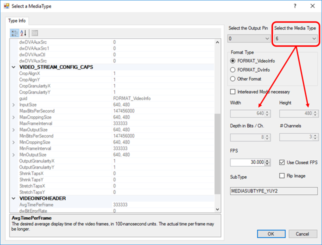

Tutorial 3: smile detection

To track the user’s face, we rely on OpenFace. OpenFace is an open-source toolkit featuring facial landmark detection, head pose estimation, facial action unit recognition, and eye-gaze estimation. We start by connecting the component Openface with the video stream of a camera device. In case your face isn’t properly tracked, try setting flip="false".
<sensor create="Camera" option="camera" fps="25.0" flip="true">
<output channel="video" pin="video" size="2.0s"/>
</sensor>
<transformer create="Openface:openface"
modelPath="model"
triPath="model\tris_68_full.txt"
auPath="model\AU_predictors\AU_all_best.txt">
<input pin="video" frame="1"/>
<output pin="openface"/>
</transformer>To visualize the tracking, we have to draw the result into the video images. The component OpenfacePainter does this job for us. It takes as input the raw video and the output stream of Openface. And it returns a video stream in which the detect facial points are highlighted. We pass this stream to a video painter.
<transformer create="OpenfacePainter:painter">
<input pin="video;openface" frame="1"/>
<output pin="video_openface"/>
</transformer>
<consumer create="VideoPainter:video" title="VIDEO" flip="false">
<input pin="video_openface" frame="1"/>
</consumer>OpenFace also provides facial action units. OpenfaceSelector allow us to select them for further processing. We add a bar plot to visualize them. Note that we use the option barNames to add proper labels. The character | is used to insert line breaks.
<transformer create="OpenfaceSelector:selector" aureg="true">
<input pin="openface" frame="1"/>
<output pin="action_units"/>
</transformer>
<consumer create="SignalPainter:plot" title="ACTION UNITS" type="5" barNames="Inner|Brow|Raiser,Outer|Brow|Raiser,Brow|Lowerer,Upper|Lid|Raiser,Cheek|Raiser,Nose|Wrinkler,Upper|Lip|Raiser,Lip|Corner|Puller,Dimpler,Lip|Corner|Depressor,Chin|Raiser,Lip|Stretcher,Lips|Part,Jaw|Drop">
<input pin="action_units" frame="1"/>
</consumer>When we start the pipeline for the first time, you will be asked to select a camera device. The information will be stored in option files in the folder of the pipeline. Delete the files if you want to switch to another device at some point (if a device is no longer available, the dialog will automatically pop up again). You will also have to select the media type. Make sure to select a media type that supports the desired resolution (width x height). The dialog will also display the native frames per second. Note that SSI may still read with a different sample rate (the one set in the options of the camera device), but possibly duplicate or drop frames. If the face tracking starts to lack, try a smaller number of frames per seconds and reduce the video resolution.
